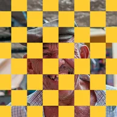

Checker

Menggambar papan catur di atas bagian opak lapisan, atau melubangi bagian tersebut.
Pengaturan
| Pengaturan | Jenis | Rentang | Default |
|---|---|---|---|
| Offset | Titik (X, Y) | -5000 px hingga 5000 px | 0 px, 0 px |
| Jumlah | Angka | 0.5 hingga 200 | 10 |
| Regangan | Titik (X, Y) | 0.01 hingga 10 | 1, 1 |
| Warna | Warna | – | #2D1EF6 |
| Lubangi | Aktif atau nonaktif | – | Nonaktif |
| Sudut | Sudut | -3600° hingga 3600° | 0° |
| Ruang layar | Aktif atau nonaktif | – | Nonaktif |